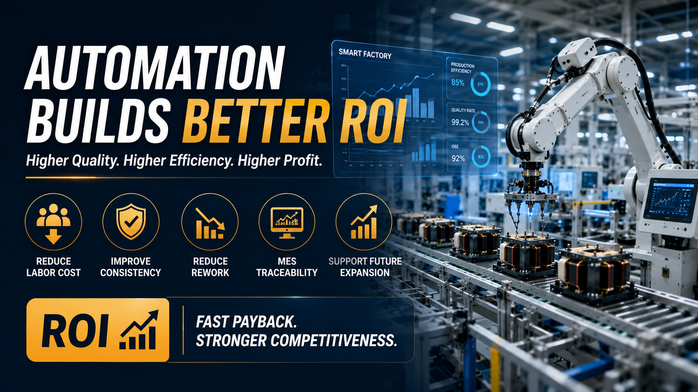

How Factory Automation Improves Quality and ROI in Transformer Manufacturing

Summary
As labor costs continue to rise and customer expectations for quality, delivery speed, and product consistency become increasingly demanding, transformer manufacturers are rethinking how their factories operate.
Factory automation is no longer simply about replacing manual labor with machines. It is about building a manufacturing system that consistently produces high-quality products while reducing operating costs and creating long-term business value.
This article explains how factory automation improves production quality, reduces manufacturing costs, increases operational efficiency, and delivers measurable return on investment (ROI) for transformer manufacturers.
Technology
- Factory Automation
- High Frequency Transformer Manufacturing
- Multi-Axis Automatic Winding
- Automated Assembly
- Vision Inspection
- Electrical Testing
- MES Integration
- Smart Factory
- Production Data Management
- Industrial Automation
- Digital Manufacturing
- Intelligent Material Handling
Challenge
Many transformer manufacturers continue to face growing operational pressure despite increasing market demand.
Common challenges include:
Rising labor costs year after year
Difficulty recruiting and retaining skilled operators
Inconsistent production quality between shifts
High rework and repair costs
Increasing customer quality requirements
Limited production capacity during peak demand
Poor production visibility and traceability
Difficulty planning future factory expansion
While production volume increases, profit margins often become smaller because manufacturing efficiency fails to improve at the same pace.
Simply adding more workers is becoming an increasingly expensive and unsustainable solution.
Solution
Factory automation transforms manufacturing from labor-driven production into a standardized, data-driven operation.
Instead of relying on operator experience, automated production systems control every critical manufacturing process with consistent precision.
Integrated automation combines intelligent material handling, multi-axis winding, automatic assembly, electrical testing, visual inspection, digital production monitoring, and real-time quality management into one coordinated manufacturing system.
The result is not only higher production efficiency but also better quality control, lower operating costs, and stronger long-term competitiveness.
Workflow & Layout
Production Planning (MES / ERP)
↓
Automatic Material Feeding
↓
Multi-Axis Precision Winding
↓
Automatic Assembly
↓
Soldering & Dispensing
↓
Electrical Performance Testing
↓
Vision Inspection
↓
Production Data Collection
↓
Automatic Sorting & Packaging
↓
Warehouse / Logistics
Each production stage is digitally connected, allowing manufacturers to monitor production status, equipment utilization, product quality, and manufacturing performance in real time.
Results & ROI
- Factory automation creates measurable improvements across the entire manufacturing operation.
- Typical business benefits include:
- Business Indicator Typical Improvement
- Labor Requirement Significant Reduction
- Product Consistency Major Improvement
- Production Capacity Higher Output
- Product Quality More Stable
- Rework Rate Lower
- Production Efficiency Higher
- Delivery Performance Faster
- Manufacturing Cost Lower Over Time
- Factory Scalability Easier Expansion
- Although every factory has different production requirements
- automation investments typically generate value through lower operating costs
- improved productivity
- and higher customer satisfaction over the long term.
Equipment List
- A complete factory automation solution may include:
- Automatic Material Feeding System
- Multi-Axis Winding Machines
- Automatic Assembly Stations
- Precision Soldering Equipment
- Glue Dispensing System
- Electrical Testing Equipment
- Vision Inspection System
- Conveyor & Material Transfer System
- Automatic Sorting & Packaging
- Barcode & Traceability System
- MES Integration
- ERP Connectivity (Optional)
- Smart Warehouse Integration (Optional)
Project Overview / Opening
Today's transformer manufacturing industry is no longer competing solely on product quality.
Manufacturers are competing on:
Production efficiency
Delivery reliability
Manufacturing flexibility
Cost control
Digital management
Long-term scalability
As customer expectations continue to increase, factory automation has become one of the most important strategic investments for manufacturers seeking sustainable growth.
Rather than simply increasing production capacity, automation creates an intelligent manufacturing environment where quality, efficiency, and profitability improve together.
Key Points
- 📌 Automation reduces dependence on manual labor.
- 📌 Standardized production improves product consistency.
- 📌 Intelligent inspection reduces defects before shipment.
- 📌 MES systems provide complete production traceability.
- 📌 Digital production enables data-driven management.
- 📌 Factory automation supports future capacity expansion.
- 📌 Lower operating costs improve long-term profitability.
- 📌 ROI comes from continuous operational improvements rather than labor savings alone.
Implementation / Workflow
Successful factory automation projects begin with understanding production goals rather than selecting individual machines.
Manufacturers first evaluate production volume, product complexity, quality requirements, labor utilization, and future expansion plans.
Based on these objectives, engineers design an integrated production system combining automated winding, assembly, inspection, testing, digital production management, and intelligent logistics.
MES platforms collect production data from every workstation, allowing managers to monitor equipment performance, product quality, production efficiency, and maintenance requirements in real time.
This integrated approach creates a manufacturing system that continuously improves productivity while supporting future business growth.
Customer Value / Results
Factory automation creates value far beyond reducing labor costs.
Manufacturers benefit through:
Lower total manufacturing cost over the factory lifecycle
Higher production consistency across every batch
Better product reliability for global customers
Reduced warranty and quality-related risks
Faster response to changing customer demand
Increased production flexibility for new product models
Complete production traceability supporting international quality standards
Better management decisions based on real-time manufacturing data
Easier factory expansion without proportional labor growth
For manufacturers serving EV, renewable energy, industrial electronics, AI infrastructure, and power supply industries, these advantages directly improve competitiveness in international markets.
Conclusion / Next Step
Factory automation is no longer simply an equipment investment. It is a long-term business strategy that improves manufacturing quality, operational efficiency, digital management, and overall profitability. Manufacturers that invest in intelligent production systems today are better positioned to meet future market demand, scale production efficiently, and compete in an increasingly demanding global manufacturing environment.
We help manufacturers worldwide design, source, integrate, and deliver industrial automation projects by leveraging China's manufacturing ecosystem. From automated transformer production lines and smart factory planning to digital manufacturing integration and warehouse automation, we provide complete project support tailored to your production goals and business strategy.
If you're evaluating automation for your transformer factory or planning a new manufacturing facility, visit our Contact page to submit your project requirements or inquiry. Our team can help you assess your production needs, develop a customized automation solution, and build a smarter, more competitive factory for the future.
SEO Title
How Factory Automation Improves Quality and ROI in Transformer Manufacturing
SEO Description
As labor costs continue to rise and customer expectations for quality, delivery speed, and product consistency become increasingly demanding, transformer manufacturers are rethinking how their factories operate.
Factory automation is no longer simply about replacing manual labor with machines. It is about building a manufacturing system that consistently produces high-quality products while reducing operating costs and creating long-term business value.
This article explains how factory automation improves production quality, reduces manufacturing costs, increases operational efficiency, and delivers measurable return on investment (ROI) for transformer manufacturers.
Related Blog
Start with Your Business Challenge
Tell us about your warehouse, factory, or production requirements. We'll help you explore practical automation solutions and relevant project references.